画像1/1: ‘RStudioのレイアウト’
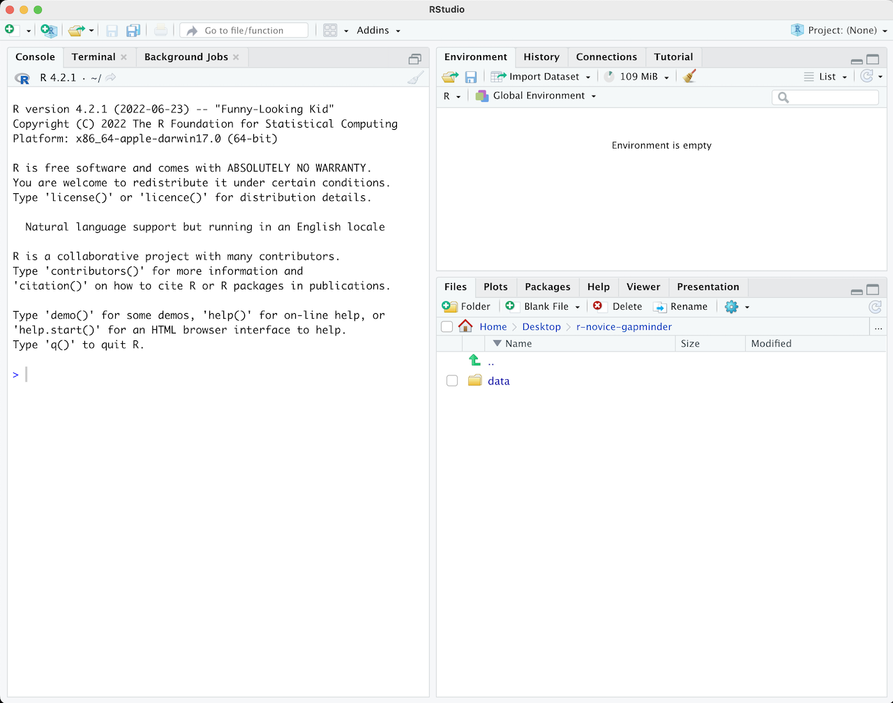
画像1/1: ‘RStudioで.Rファイルを開いたレイアウト’
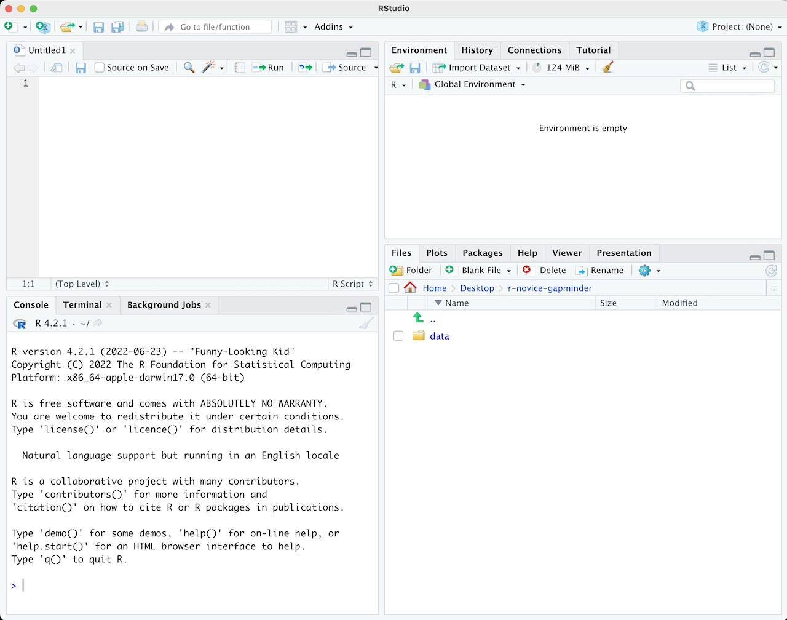
画像1/1: ‘悪いプロジェクト構成を示すファイルマネージャーのスクリーンショット’
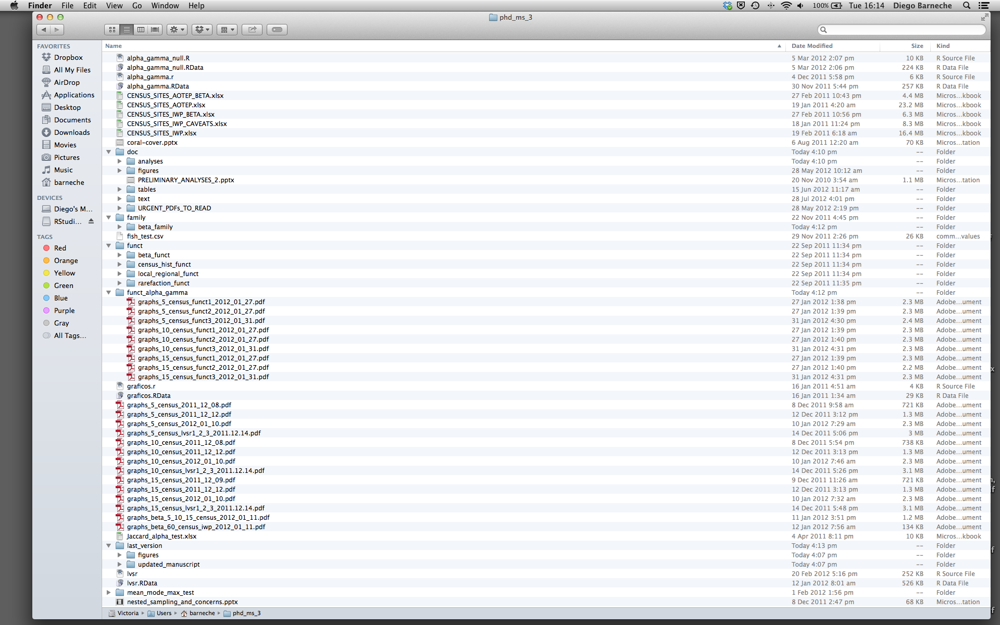
画像1/1: ‘不等式テスト’
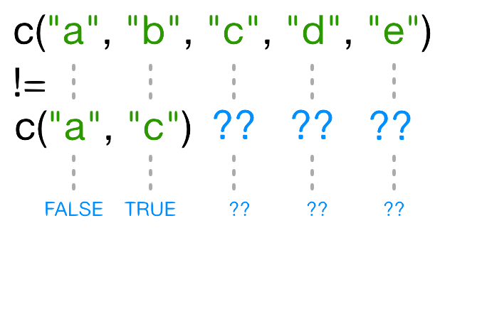
画像1/1: ‘リサイクルによる不等式テストの結果’
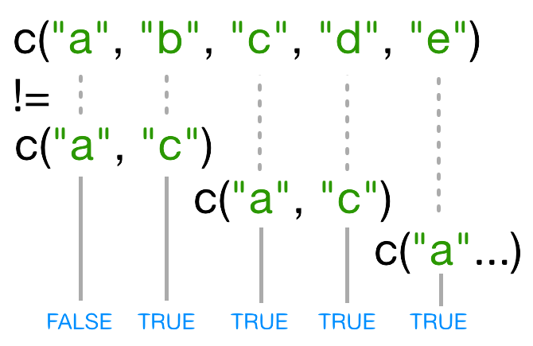
画像1/1: ‘何も描画されていない、ggplot() に美的マッピングを追加する前の空のプロット。’

画像1/1: ‘X軸に gdpPercap、Y軸に lifeExp を表示する散布図のための軸だけがあるプロットエリア。’
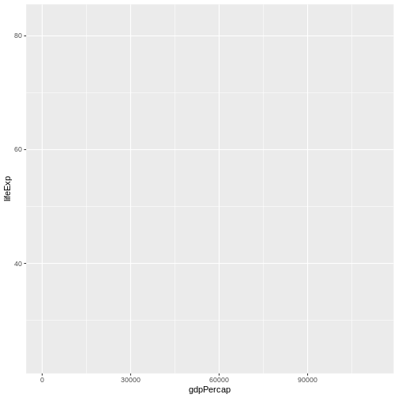
画像1/1: ‘GDP と平均寿命の関係を示す散布図。データポイントが描画されている。’

画像1/1: ‘平均寿命が時間とともに増加していることを示す、年と平均寿命の散布図。’
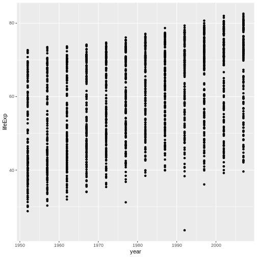
平均寿命が時間とともに増加していることを示す、年と平均寿命の散布図。
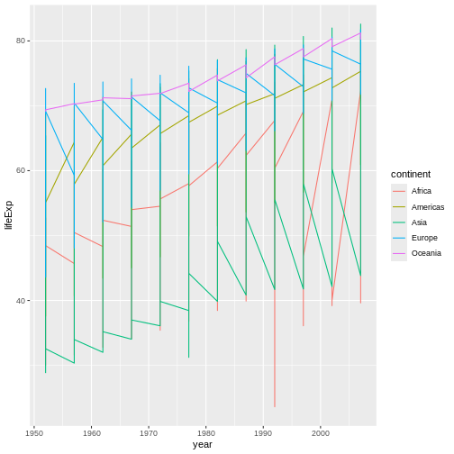
画像1/1: ‘GDPと平均寿命の散布図で、変数間の関係を示すトレンドラインを追加したグラフ。データポイントが拡大され、オレンジ色で、透過性なしで表示されています。’
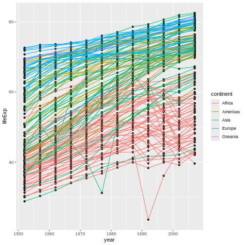
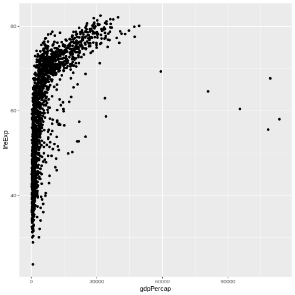
画像1/1: ‘X軸が対数スケールでデータが拡散したGDPと平均寿命の散布図’
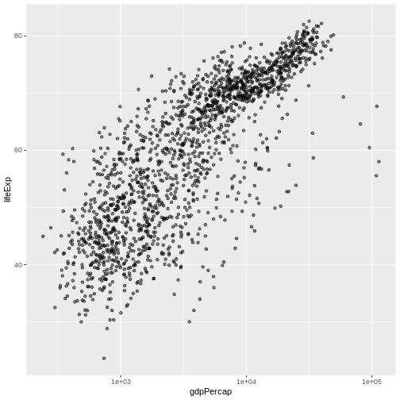
X軸が対数スケールでデータが拡散したGDPと平均寿命の散布図
画像1/1: ‘GDPと平均寿命の散布図に、変数間の関係を要約する青いトレンドラインが追加されたグラフ。グレーの影は95%の信頼区間を示します。’
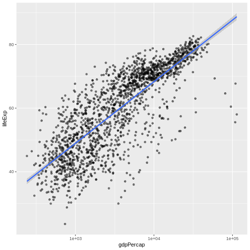
画像1/1: ‘GDPと平均寿命の散布図に、少し太めの青いトレンドラインが追加されたグラフ。’
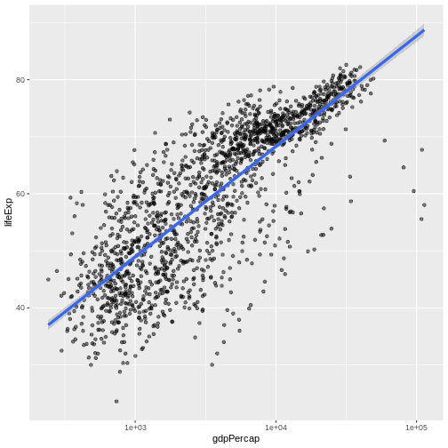
画像1/1: ‘GDPと平均寿命の散布図に、変数間の関係を要約するトレンドラインが追加されたグラフ。データポイントが拡大され、オレンジ色で、透過性なしで表示されています。’
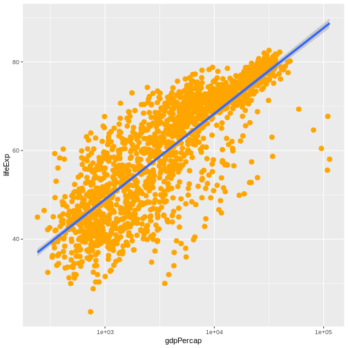
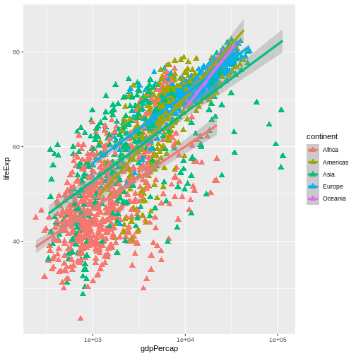

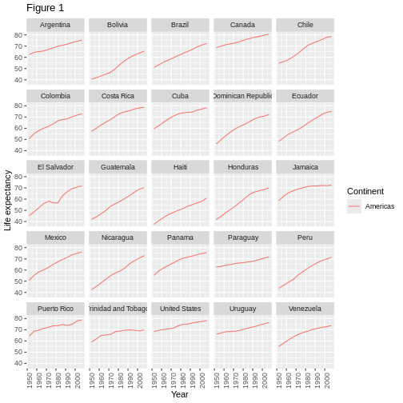
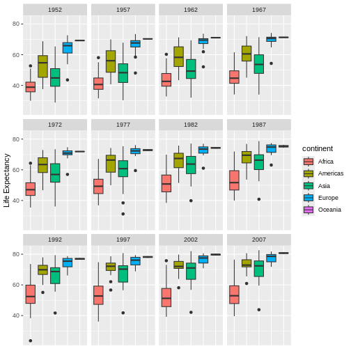
画像1/1: ‘中国、インド、インドネシアの人口（単位は100万人）を年に対してプロットした散布図。国はラベル付けされていません。’
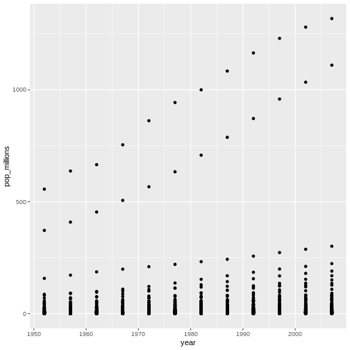
画像1/1: ‘中国、インド、インドネシアの人口（単位は100万人）を年に対してプロットした散布図。国はラベル付けされていません。’
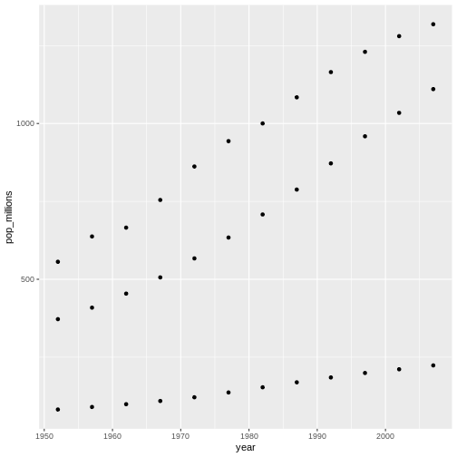
画像1/1: ‘データフレームの2つの列を選択する select 関数の使用を示す図’
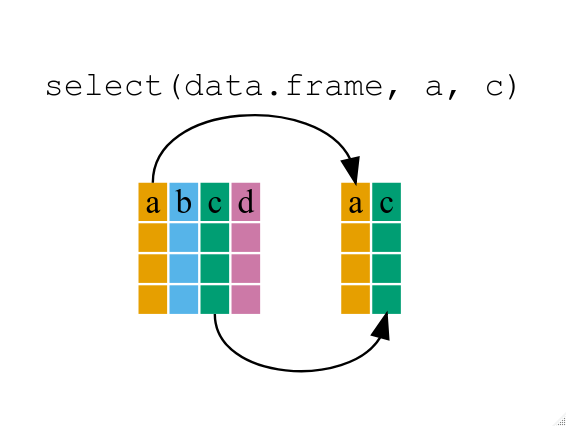
画像1/1: ‘group_by 関数がデータフレームをグループ化する仕組みを示す図’
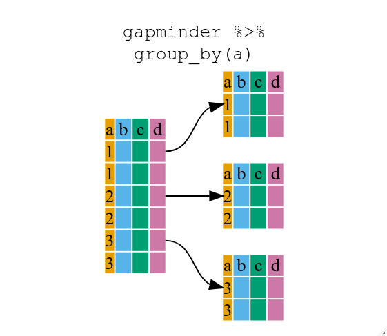
画像1/1: ‘group_by と summarize を組み合わせて新しい変数を作成する使用例’

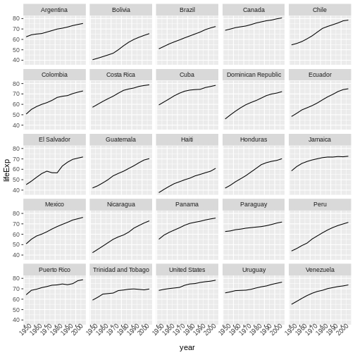
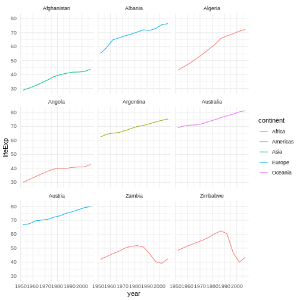
画像1/1: ‘データフレームの「広い」形式と「長い」形式の違いを示す図’
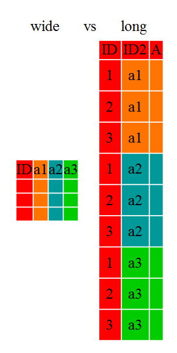
画像1/1: ‘gapminder データフレームの「広い」形式を示す図’

画像1/1: ‘pivot_longerがデータフレームを「広い」形式から「長い」形式に再編成する方法を示す図’

画像1/1: ‘RStudioでの新しいR Markdownファイルダイアログボックスのスクリーンショット’
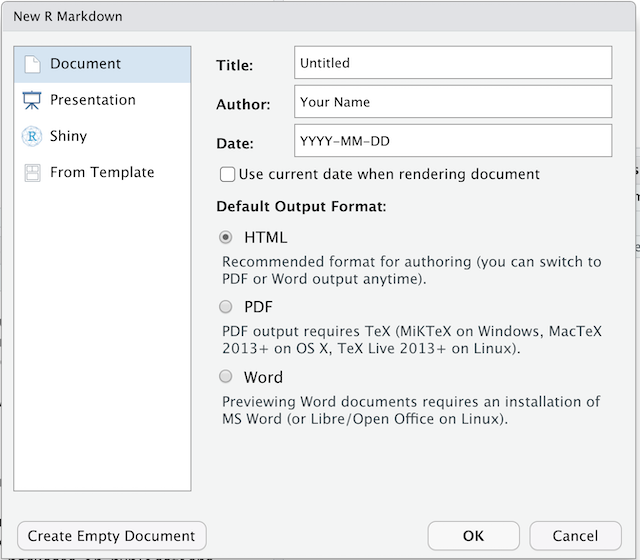
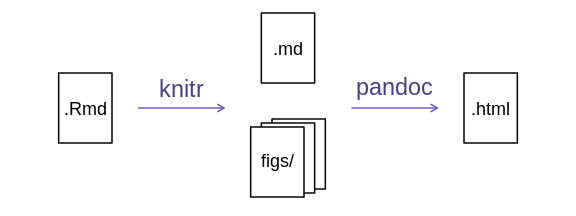
画像1/1: ‘RStudio のビジュアル編集モードのオンオフ切り替えボタンのアイコン（コンパスのような形）’
RStudio バージョン 1.4
以降には、ビジュアルマークダウン編集モードが含まれています。
このモードでは、マークダウン表記（例:
**太字**）が入力中にフォーマットされた外観（太字）に変換されます。
また、このモードには上部に基本的なフォーマットボタンを含むツールバーがあり、一般的なワープロソフトに似た操作が可能です。
ビジュアル編集モードは、R Markdown ドキュメントの右上隅にある
ボタンを押すことでオン/オフを切り替えられます。